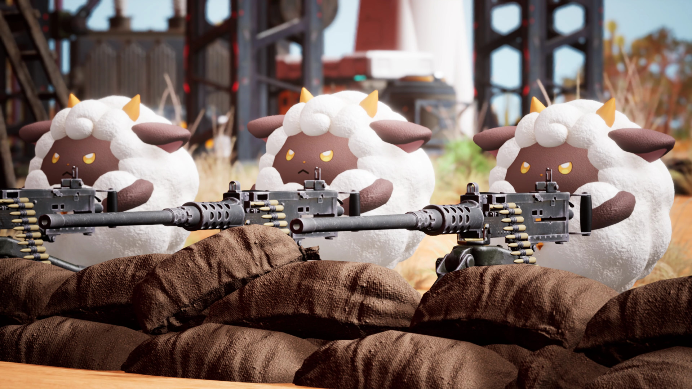
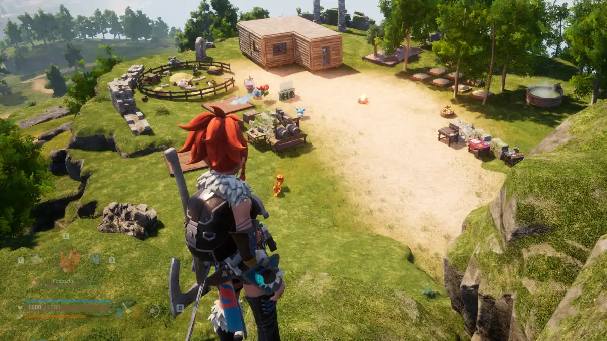

Este é um jogo em que você pode tanto levar uma vida tranquila junto de criaturas fantásticas conhecidas como ""Pals"" quanto envolver-se em confrontos arriscados contra caçadores clandestinos. Os Pals podem ser usados em batalhas, para procriação ou até como ajudantes de trabalho em fazendas e fábricas. Você também pode vendê-los ou transformá-los em comida
Em Palworld, não há exatamente uma história. É um jogo mais livre, que permite ao jogador construir seu personagem e sua aventura. Há uma imensa variedade de Pals que podem ser capturados, utilizados como companheiros e ajudantes. E há objetivos para evoluir no game, como melhorar sua base, capturar um determinado número de Pals, vencer inimigos, etc.
